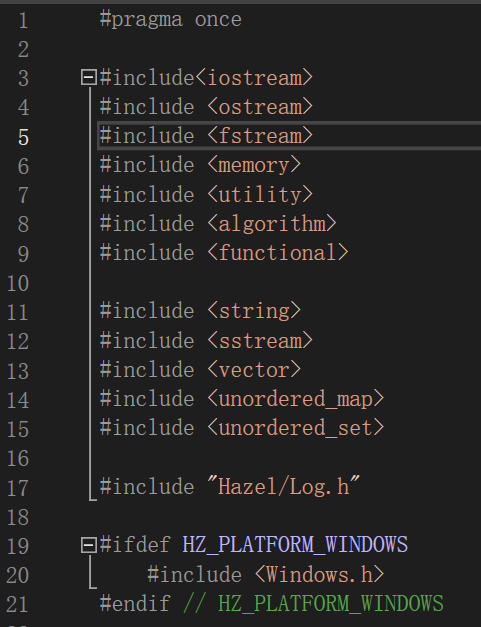
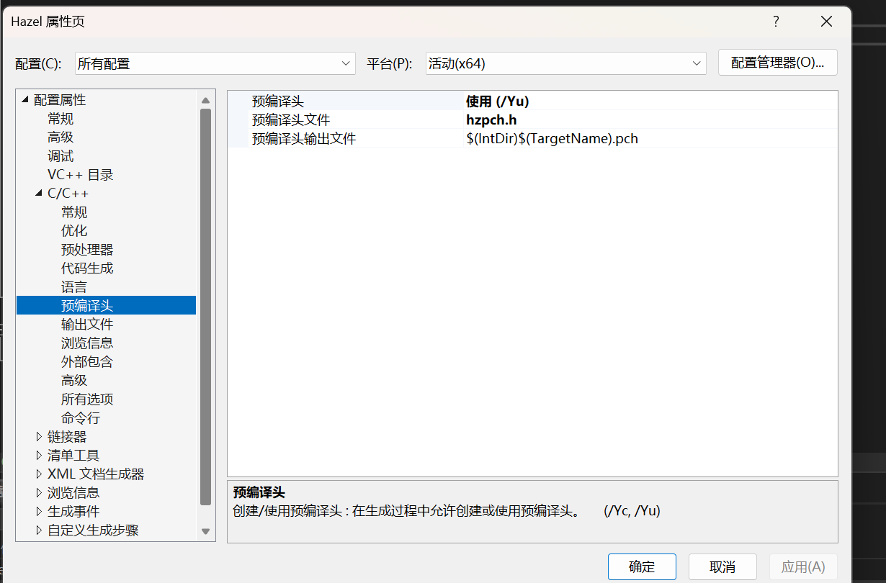
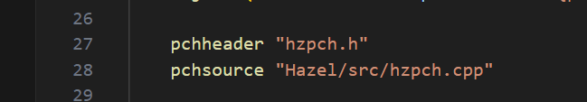

HazelEngine笔记5
预编译头文件（Precompiled Header，简称 PCH）
预编译头文件（Precompiled Header，简称 PCH）是编译器为了加快编译速度所使用的一种技术。其原理是在首次编译时预先编译一部分头文件，将这些头文件生成一个预编译的二进制文件，之后的编译过程中直接重用该二进制文件，而不是重复编译这些头文件。
1. 预编译头文件的原理
在大型项目中，很多文件会引入相同的头文件，比如标准库、第三方库以及常用的项目头文件。编译器需要在每个源文件中重复编译这些头文件，而大多数头文件的内容并不会发生改变，这就造成了编译资源的浪费。
预编译头文件的基本流程如下：
- 初次编译时：编译器先编译包含大量通用头文件的预编译头文件（比如
pch.h）。这会生成一个二进制文件，通常被称为“预编译头”（.pch文件）。 - 后续编译时：当其他源文件包含这个预编译头文件时，编译器会直接使用之前生成的
.pch文件，而不是重新编译其中的内容。
2. 预编译头文件的作用
预编译头文件通常用于存放不经常变动的头文件，比如：
- 标准库（如
<iostream>,<vector>等）。 - 第三方库的头文件。
- 稳定、不常修改的项目头文件。
3. 预编译头文件的好处
预编译头文件带来了显著的编译速度提升，特别是在大型项目中。它的具体好处包括：
- 减少重复编译：避免了对相同头文件的重复编译，显著减少了编译时间。
- 降低项目的整体编译时间：在项目中，头文件通常占了大部分的编译时间。预编译头文件减少了每个源文件的编译工作量，整体编译速度提升明显。
- 提高生产力：较短的编译时间有助于提高开发效率，开发者可以更快地看到代码变更后的效果。
4. 使用预编译头文件的注意事项
- 文件放置：在预编译头文件中，只包含那些不常变动的头文件。频繁变动的文件不应放入预编译头，否则每次修改都需要重新生成
.pch文件，反而会拖慢编译速度。 - 编译选项：不同编译器的预编译头文件支持各不相同，通常需要在项目的编译设置中明确指定哪些文件使用预编译头。
- 兼容性：预编译头文件在跨平台时可能会遇到不同编译器的兼容性问题。需要检查不同平台和编译器的预编译头设置。
示例
例如，在一个 Visual Studio 项目中，可以创建一个预编译头文件 pch.h，包含常用的标准库和稳定头文件：
// pch.h
#include <iostream>
#include <vector>
#include <string>
// 其他不常变动的头文件
然后在项目设置中将 pch.h 设为预编译头文件，编译器会在首次编译时生成 .pch 文件，以后每次编译仅引用该 .pch 文件。
总结
预编译头文件通过提前编译不常变动的头文件来加速编译流程。其原理是将常用的头文件内容存为二进制 .pch 文件，避免重复编译，提高编译效率。
补充一点就是编译的过程中都是将每一个文件作为一个翻译单元处理的.首先是将头文件展开,然后编译,预编译的话其实就是将头文件的二进制预编译提前处理好,到时候引用的时候直接放进去,而不是再展开头文件然后解析编译冗长的内容了.
这就是Hazel目前存放的一些常用的头文件，还包扩平台对应的API
设置方式要么在VS项目属性中配置，要么就在premake文件中引入预编译文件。
 